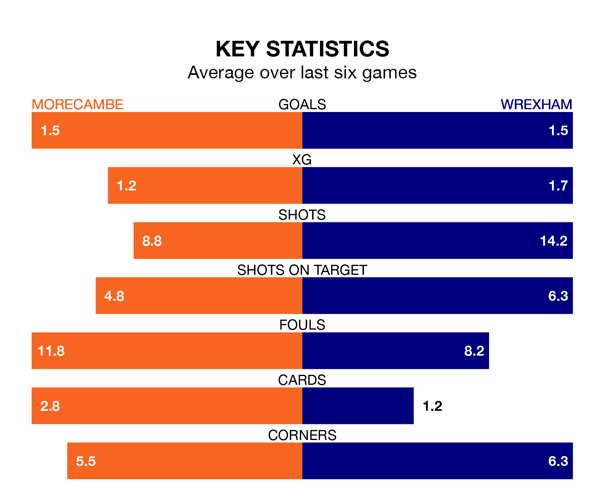

Morecambe host Wrexham on Saturday at the Mazuma Stadium in EFL League Two.
In their last league match, on Tuesday, Morecambe beat Crawley Town 1-0 at home, with their goal scored by Jordan Michael Slew.
Wrexham also won, 4-0 at home against Accrington Stanley on March 2, with Paul Philip Mullin (three) and Elliott Lee on the scoresheet.
With 64 goals in 35 games so far this season, Wrexham are scoring more than average in the league with 1.8 goals per game. And they are conceding fewer than average, letting in 45 goals at a rate of 1.3 per game.
Morecambe, meanwhile, are average scorers, with 1.5 goals per game. They have also conceded 1.5 goals per game.
The Dragons are third in the table after 35 games, of which they have won 18 and drawn nine, earning 63 points.
The Shrimps are five places behind the away team in eighth, with 15 wins and nine draws putting them on 54 points.
In Lee, Wrexham have one of the league's most on-form strikers so far this season. He has notched 15 goals in 35 appearances, to sit eighth in the scoring charts.
His goal rate of one every 198 minutes is slightly quicker than that of Michael Mellon, the hosts' top scorer with a goal every 134 minutes, and a total of 13 goals in 22 games.
Morecambe are in reasonable form in EFL League Two, with three wins and two draws from their last six games.
And also with three wins and two draws over that period, Wrexham's form is identical – they have both taken 11 points from 18.
Saturday's match will be refereed by Thomas Parsons, who has taken charge of nine EFL League Two games so far this season, issuing one red card and booking 52 players. He has awarded one penalty.
He is yet to oversee a match featuring either Morecambe or Wrexham this season.
Updated: 09:34 (UTC), 08/03/24